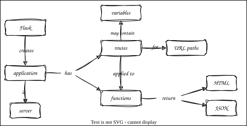

A Server
Overview

Outline
server_hello.py: return HTML
"""Hello server."""
from flask import Flask
HELLO = """\
<html>
<body>
<h1>Hello</h1>
</body>
</html>
"""
app = Flask("hello")
@app.route("/")
def root():
return HELLO
- Go to http://127.0.0.1:5000 to view (5000 being Flask's default port)
- Or use
fetch.pyto fetch and display data
- Or use
"""Fetch HTML from URL and display."""
import argparse
import httpx
HOST = "127.0.0.1"
PORT = 5000
RESOURCE = "/"
def main():
"""Main driver."""
opt = parse_args()
url = f"http://{opt.host}:{opt.port}{opt.resource}"
response = httpx.get(url)
print(response.status_code)
print(response.text)
def parse_args():
"""Parse command-line arguments."""
parser = argparse.ArgumentParser()
parser.add_argument("--host", type=str, default=HOST, help="server address")
parser.add_argument("--port", type=int, default=PORT, help="server port")
parser.add_argument("--resource", type=str, default=RESOURCE, help="resource path")
return parser.parse_args()
if __name__ == "__main__":
main()
server_func.pycreates the application and configures routes in a function- Get path to staff CSV from
DATAenvironment variable - Read and convert to HTML with PrettyTable
- Get path to staff CSV from
def create_app():
"""Build application and configure routes."""
app = Flask("func")
CORS(app)
@app.get("/")
def root():
"""Display home page as HTML."""
return util.as_html()
return app
server_routes.pyconfigures several routes- Use query parameters or URL fragments to select individual row or column
- Use Polars to get a dataframe and Flask to convert to JSON
def create_app():
"""Build application and configure routes."""
app = Flask("routes")
CORS(app)
@app.get("/")
def root():
return util.as_html()
@app.get("/col/<name>")
def column(name):
data = util.as_dataframe()
return jsonify(list(data[name]))
@app.get("/row/<staff_id>")
def row(staff_id):
staff_id = int(staff_id)
data = util.as_dataframe()
row = data.filter(pl.col("staff_id") == staff_id).row(0, named=True)
return jsonify(row)
return app
- Some endpoints return HTML, some return JSON
- No endpoint should return both
server_err.pyhandles errors- Check row and column and raise exception if not there
- Rely on Flask to handle nonexistent routes
def create_app():
"""Build application and configure routes."""
app = Flask("err")
CORS(app)
@app.get("/")
def root():
return util.as_html()
@app.get("/col/<name>")
def column(name):
try:
data = util.as_dataframe()
return jsonify(list(data[name]))
except Exception as exc:
abort(util.HTTP_400_BAD_REQUEST, str(exc))
@app.get("/row/<staff_id>")
def row(staff_id):
try:
staff_id = int(staff_id)
data = util.as_dataframe()
row = data.filter(pl.col("staff_id") == staff_id).row(0, named=True)
return jsonify(row)
except Exception as exc:
abort(util.HTTP_400_BAD_REQUEST, str(exc))
return app